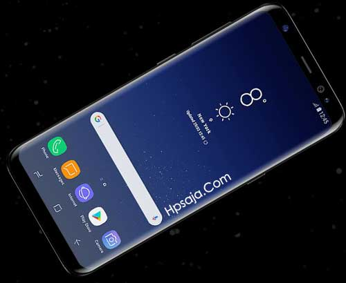
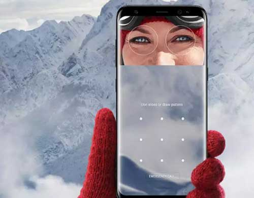
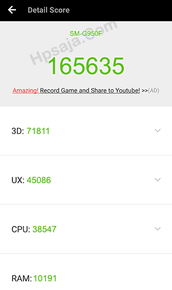

Samsung resmi merilis flagship terbarunya yakni galaxy S8 series dengan mengusung berbagai fitur canggih dan terbaru saat ini seperti modul keamanan iris scanner, infinity display,Asisten Bixby layak nya siri milik apple serta serta tombol fisik ciri khas samsung kini telah berubah menjadi tombol sensitif.
Desain
Samsung Galaxy S8 dan Galaxy S8 plus ini mengusung desain unibodi dengan back cover terlapisi kaca gorilla glass 5. Pada bagian depan tepatnya diatas layar, anda akan menemukan kamera depan 8 MP yang di temani dengan sensor “iris scanner” yang merupakan modul keamanan paling canggih di perangkat mobile saat ini.
Desain duo galaxy S8 ini memiliki julukan “Infinity display”, kenapa ? karena 80% lebih bagian depan duo galaxy S8 ini adalah layar yang artinya pada bagain depan lebih di domminasi oleh layar, Rasio layar ke bodi pada kedua hp ini meningkat 18% lebih besar dari pada pendahulunya yakni galaxy S7.
Layar Super AMOLED Resolusi Tinggi + Gorilla Glass 5

Pada bagian bawah layar, anda tidak akan menemukan tombol home fisik yang menjadi ciri khas hp buatan samsung sebelumnya. Pada galaxy S8 ini tombol fisik dan kapasitif kini telah menjadi tombol sensitif yang di masukkan kedalam layar, mirip – mirip hp infinix atau google pixel gitu.
Layar kedua hp ini mengsung teknologi dan resolusi yang sama, namun ukuran dan kerapatan pixelnya berbeda. pada galaxy S8, memiliki ukuran layar 5.8 inchi dengan kerapatan pixel hingga 570 ppi. sedangkan galaxy S8 plus memiliki layar 6.2 inchi dengan kerpatan pixel mencapai 529 ppi.
Asiknya lagi, anda dapat mengubah resolusi layar kedua hp ini di pengaturan sesuai kebutuhan anda. Samsung memberikan 3 pilihan resolusi di antaranya HD+ (1480 x 720 pixel), Full HD+ (2220 x 1080 pixel) dan WQHD+ (2960 x 1440 pixel). selain itu, anda juga dapat merubah karakter layar nya dengan pilihan Adaptive, AMOLED Chinema, AMOLED Photo dan basic.
Modul keamanan Iris Scanner

Kedua Samsung Galaxy S8 ini memiliki dua teknologi keamanan yang sangat canggih di kelas smartphone saat ini, di antaranya “iris scanner” yang terletak di atas layar dan “sensor fingerprint” yang terletak di sebelah kiri kamera belakang.
Iris Scanner berfungsi untuk membuka kunci layar menggunakan mata yang telah di verifikasi sebelumnya, anda hanya di minta untuk menhadapkan mata ke layar saja, maka layar akan terbuka dengan cepat. kemampuan sensor iris ini pun sangat cepat dan responsive. jadi tak akan ada yang bisa membuka kunci layar hp anda kecuali anda sendiri.
Performa ngebut dengan Chipset Exynos 8895
Samsung merilis Galaxy S8 dan S8+ ini dengan dua varian processor, di antaranya Snapdragon 835 dan exynos 8895. seperti biasa, versi exynos lah yang akan masuk ke indonesia. untuk versi snapdragon biasanya di khususkan untuk pasar amerika dengan slot single SIM.
Samsung Galaxy S8 dan Galaxy S8+ ini memiliki dapur pacu yang sama yakni processor Octa-core 2,3 Ghz dengan chipset exynos 8895 serta GPU Mali G71 MP20. hawdware tersebut di duetkan dengan RAM 4GB yang mampu menghasilkan performa komputasi yang sangat cepat, gaming kelas atas lancar dengan grafis yang sangat bagus serta proses multi tasking yang cepat dan smooth.
Bagi anda penggila skor antutu, silahkan intip skor antutu smasung galaxy S8 versi chipset Exynos dibawah ini.
Skor Antutu Benchmark Samsung Galaxy S8
 Kamera dengan Aperture Lebar Kamera depan dan belakang duo galaxy S8 ini memiliki aperture atau bukaan lensa yang lebar yakni f/1.7. Semakin lebar bukaan lensa pada kamera, maka performanya di area minim cahaya semakin bagus. Begitu pula dengan Galaxy S8 series ini yang mampu menghasilkan jepretan yang lebih terang, jernih dan tajam meskipun di area minim cahaya.
Selain itu, kamera galaxy S8 dan S8+ ini di bekali “mode pro” yang dapat membuat hasil jepretan menjadi lebih profesional. pada mode pro ini, anda dapat mengatur Shutter speed 1/2400 dalam 10 detik, ISO 50 sampai 800 dan White balance secara manual. Kesimpulan Kesimpulannya, Layar Galaxy S8 plus lebih lebar di banding galaxy S8 biasa. namun untuk urusan kejernihan dan ketajaman gambar yang di hasilkan layarnya, di atas kertas Samsung S8 lebih unggul di banding versi Plus. karena kerapatan pixel yang di hasilkan lebih tinggi galaxy S8.
Layar kedua hp sama – sama berbentuk melengkung atau edge layaknya galaxy S7. layar tersebut sudah di lapisi kaca gorilla glass 5 yang tentunya lebih kuat terhadap berbagai macam goresan maupun kejatuhan dari gorilla glass 4.